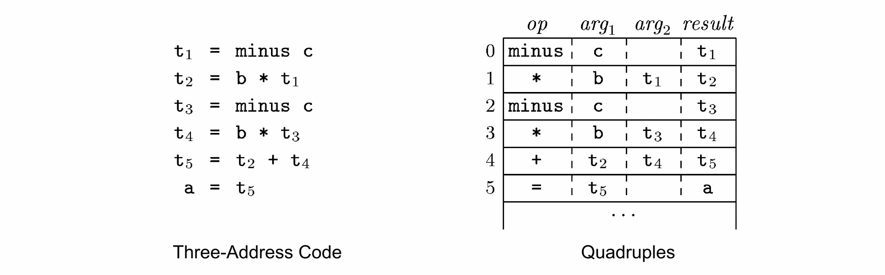
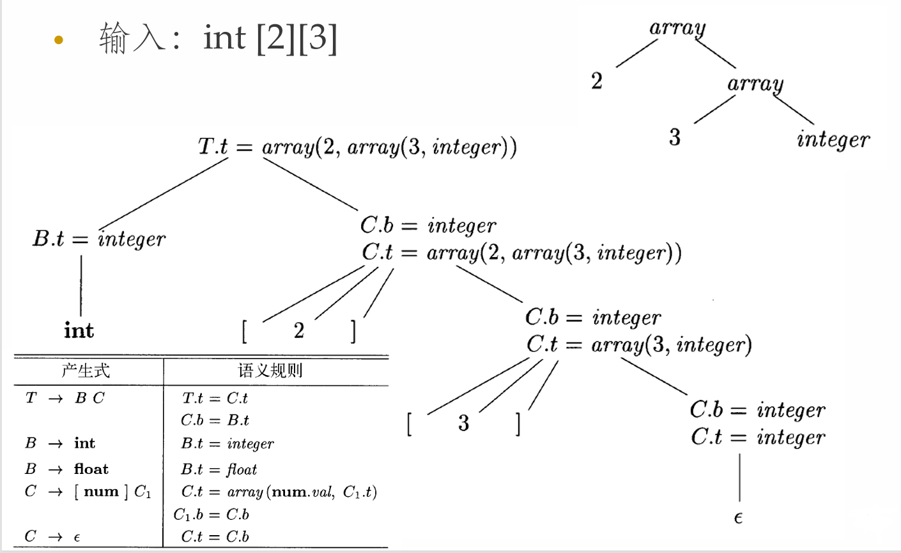
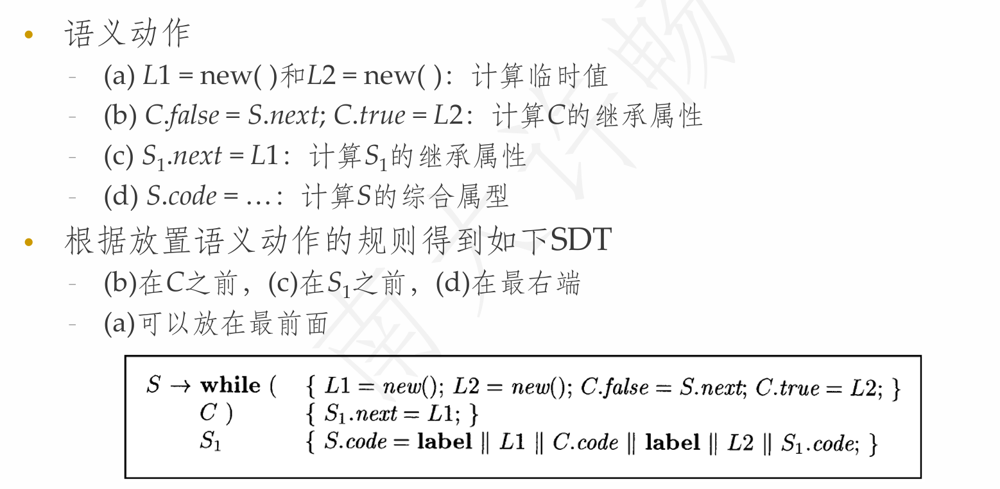
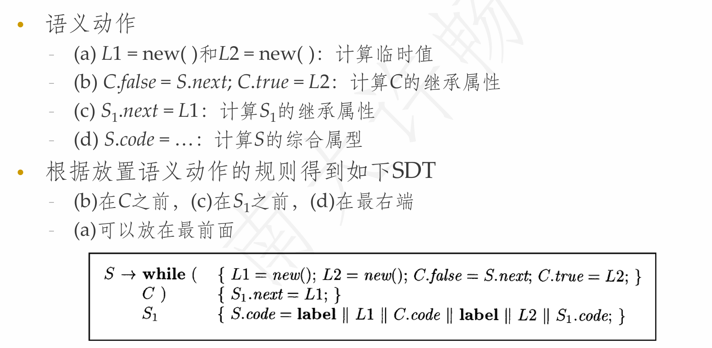

ch6.1
编译的主要阶段包括：
- 词法分析（Lexical Analysis）
- 语法分析（Syntax Analysis）
- 中间代码生成（Intermediate Representation Generation）
- 目标代码生成（Target Code Generation）
中间表示（IR）是连接语法分析与目标代码生成的桥梁，主要作用是优化和分析。
三地址码 Three-Address Code（重要）
-
每条指令最多包含一个操作符。
-
每条指令最多包含三个地址（变量）。
- 形式：
x = y op z
- 形式：
常见：
| 三地址码 | 说明 |
|---|---|
| x = y op z | x, y, z: 地址; op: 二元操作符 |
| x = op y | op: 一元操作符 |
| x = y | |
| goto L | L: 标签 |
| if x goto L | |
| if x op y goto L | op: 关系操作符 (>, <, =, …) |
示例：
实现方式：
-
四元式（Quadruples）：将操作拆成 4 个字段 (op, arg1, arg2, result)。
-
三元式（Triples）：使用索引代替变量，提高结构化程度。
-
间接三元式（Indirect Triples）：在三元式基础上增加指针索引。
对于 a = b * (-c) + b * (-c):
四元式：
三元式：
间接三元式：
语法制导（重要）
语法制导：将文法符号和某些属性相关联，并通过语义规则来描述如何计算属性的值
语法制导翻译：在产生式体中加入语义动作，并在适当的时候执行这些语义动作
SDD
-
将每个文法符号与一个语义属性集合相关联
-
将每个产生式和一组语义规则相关联
如果 X 是一个文法符号，a 是 X 的属性，则用 X.a 来表示属性 X 在分析树上的标号为 a 的节点的值。
一个分析树结点和它的分支对应于一个产生式规则，而对应的语义规则确定了这些结点上的属性的取值。
例如算术表达式的SDD与对应的AST（n表示结束）：
继承属性和综合属性
S属性SDD
-
只包含综合属性的SDD称为S属性SDD（每个属性都是综合属性）
- 每个语义规则都根据产生式体中的属性值来计算头部非终结符号的属性值（根据子构造的属性计算出父构造的属性）
-
S属性的SDD可以和LR语法分析器一起实现
- 栈中的状态可以附加相应的属性值
- 在进行归约时，按照语义规则计算归约得到的符号的属性值
-
可以和自顶向下、自底向上的语法分析过程一起计算
L属性SDD
-
每个属性要么是综合属性，要么是继承属性，且产生式A → X1X2…Xn中计算Xi.a的规则只能使用：
- A的继承属性
- Xi左边的文法符号Xj的继承属性或综合属性
- Xi自身的继承或综合属性，且这些属性之间的依赖关系不形成环
- 人话：如果是继承属性，只会依赖父结点和左边的兄弟结点
-
特点
- 依赖图的边
- 继承属性从左到右，从上到下
- 综合属性从下到上
- 在扫描过程中，计算一个属性值时，和它相关的依赖属性都已经计算完毕
- 依赖图的边
CST和AST
语法制导翻译SDT
SDT可以看做是SDD的具体实施方案。在产生式体中加入语义动作，并在适当的时候执行这些语义动作。
SDT的基本实现方法：
-
建立语法分析树
-
将语义动作看作是虚拟的结点
-
从左到右、深度优先地遍历分析树，在访问虚拟结点时执行相应动作
用SDT实现两类重要的SDD：
-
基本文法可以使用LR分析技术，且SDD是S属性的
-
基本文法可以使用LL分析技术，且SDD是L属性的
S属性SDD转换为SDT
非常简单，由于S属性的SDD中，所有的属性均为综合属性，因此，只有当所有子属性计算完毕之后，才能计算父节点。因此，我们只需要把所有的语义规则放到对应产生式的右部即可。
L属性SDD转换为SDT
-
将每个语义规则看作是一个赋值语义动作
-
将赋值语义动作放到相应产生式的适当位置
- 计算A的继承属性的动作插入到产生式体中对应的A的左边，如果A的继承属性之间具有依赖关系，则需要对计算动作进行排序
- 计算产生式头的综合属性的动作在产生式的最右边
SDT消除左递归
类型表达式
例：

满足后序遍历
while语句
 转化为SDT：

转化为SDT：

数组引用
布尔表达式的回填翻译
- 本文链接：https://squirrelune.github.io/cn/2025Spring-%E7%BC%96%E8%AF%91%E5%8E%9F%E7%90%86/%E7%BC%96%E8%AF%91%E5%8E%9F%E7%90%8604/
- 许可协议： 除特殊声明外，本站博文均采用 CC BY-NC-SA 3.0 CN 许可协议，转载请注明出处！